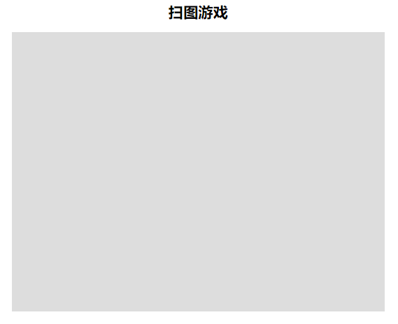
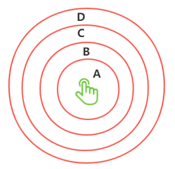
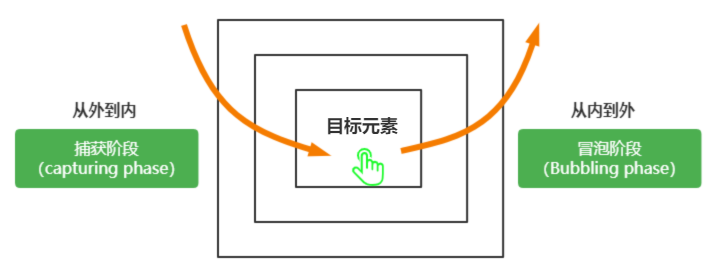
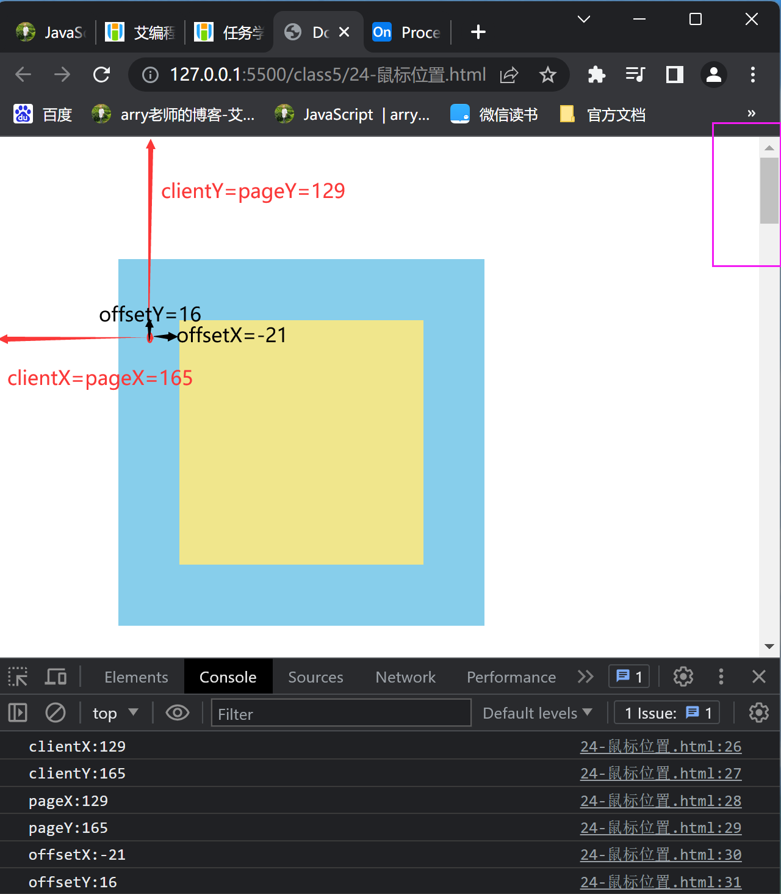
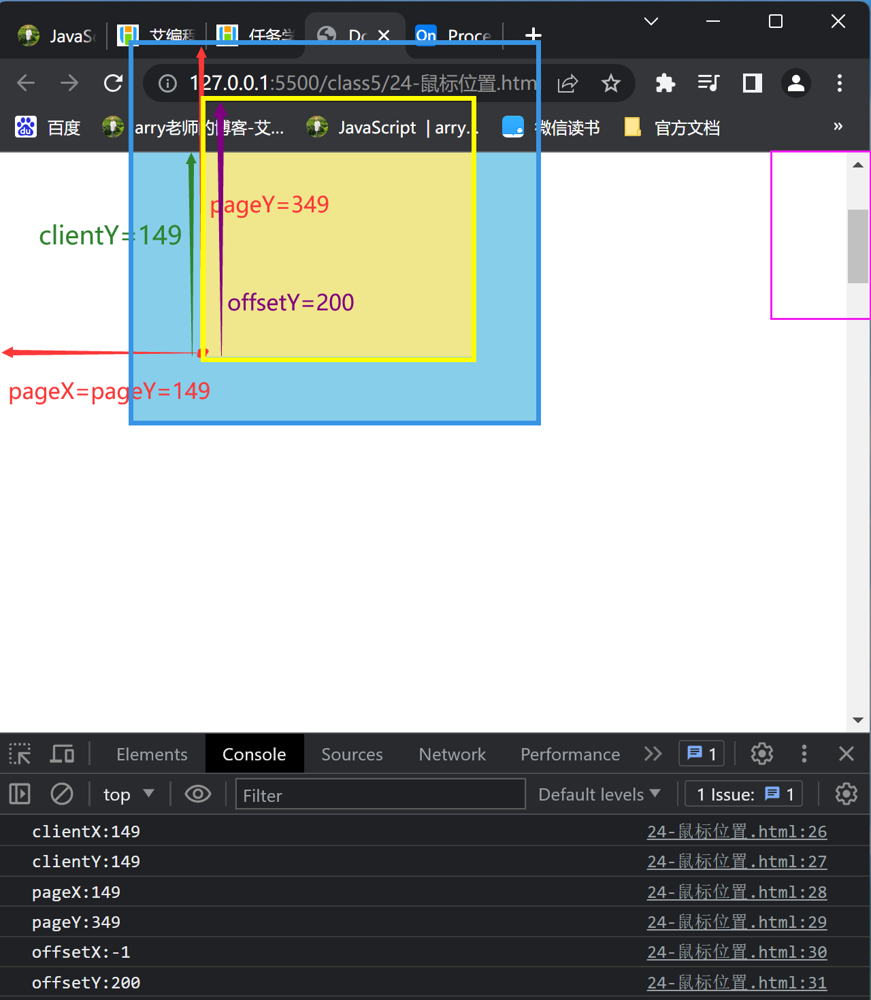

一、DOM 事件的基本介绍
什么是 DOM 事件 ？
事件可以理解为：用户与网页发生的交互动作，比如：
- 当鼠标移动到元素上面，会触发
mouseover事件 - 当鼠标标点击中某个页面元素 ，会触发
click事件 - 当用户进入或离开页面时，会触发 load 和 unload 事件
- …. DOM 中的事件非常多，我们后面慢慢来学习
当我们触发了上面这些事件时，计算机是如何知道用户与浏览器（网页）发生了这些交互呢 ？这就涉及到事件监听。
- 当鼠标移动到元素上面，会触发
什么是事件监听 ？
- 事件监听：就是计算机对事件进行监听，知道什么时候发生了这个事件，从而执行一些程序员预先编写好的程序。
设置事件监听的方法
设置事件监听的方法有 2 种
- 以 on 方式注册事件（绑定事件）
- 以 addEventListener() 方式监听注册事件
- on 方式注册事件
基本用法：
- 语法
eventTarget.on事件类型 = fn; eventTarget触发事件的目标对象，称为事件源- on后面是事件类型，事件类型有很多如 click、mouseover、keydown、focus 等
- fn是一个函数，事件触发时调用的函数，被称为事件处理函数
- 一个完整的 DOM 事件，需要具备以上三部分：事件源、事件类型、事件处理函数
- 语法
><button id="btn">点我</button>
><script>
// 获取dom元素
var btn = document.getElementById("btn");
>
// btn 为事件源 click 为事件类型名，这里的函数为事件处理函数
btn.onclick = function () {
alert("我被点击了1");
};
btn.onclick = function () {
alert("我被点击了2");
};
></script>
on 方式注册事件，同一元素的同一事件，只能有一个事件处理函数，同时以写在后面的为主
- 以 addEventListener 方式监听注册事件
基本用法
- 语法
eventTarget.addEventListener(type, fn, useCapture); eventTarget为事件源, 触发事件的目标对象type监听事件的类型，type要加引号fn事件处理函数useCapture设置事件触发是捕获阶段还是冒泡阶段，其值只能是 false 和 true- true 表示在捕获阶段触发
- false 默认值，表示在冒泡阶段触发
- addEventListener方式，可以给元素的同一个事件添加多个事件监听（即绑定多个事件处理函数）
- 语法
应用场景
- 同一个页面要实现吸顶盒效果、楼梯式导航、滚动到底部加载更多等效果，这些效果都会用到
window.srcoll事件- 所以我们需要为 window 的 scroll 事件，添加三个事件处理函数来分别处理以上三种效果。
><button id="btn">点我</button>
><script>
// 获取dom元素
var btn = document.getElementById("btn");
// btn 为事件源 click 为事件类型名，fn为事件处理函数 false表示在冒泡阶段触发
btn.addEventListener("click", fn1, false);
btn.addEventListener("click", fn2, false);
function fn1() {
alert("我被点击了fn1");
}
function fn2() {
alert("我被点击了fn2");
}
></script>
- 移除事件监听
- 移除
on方式绑定（注册）的事件eventTarget.on事件类型 = null; // 移除事件处理程序
><button id="btn">点我</button>
>
><script>
// 获取dom元素
var btn = document.getElementById("btn");
btn.onclick = function () {
console.log("点击后要执行的内容");
};
btn.onclick = null; // 移除 click事件
></script>
- 移除
addEventListener方式的事件监听，需要通过removeEventListener方法来实现
removeEventListener(事件名，事件处理函数，布尔值); // 用来移除具体的某一个事件监听
// 移除时的，事件名，事件处理函数，布尔值 要与addEventListener添加时的参数完全相同
- 因为
addEventListener可以为同一元素的的同一事件绑定多个事件处理函数- 所以，用
removeEventListener方法来移除对应事件监听时，要保证移除的事件名，事件处理函数，布尔值要与addEventListener添加时的参数完全相同。才能移除具体的某个事件监听
><button id="btn">点我</button>
><script>
// 获取dom元素
var btn = document.getElementById("btn");
btn.addEventListener("click", fn1, false);
// 不能移除，因为没有相对应的事件监听
// btn.removeEventListener("click", fn1, true);
// 移除第一次添加的事件监听
btn.removeEventListener("click", fn1, false);
function fn1() {
console.log("执行了fn1");
}
></script>
注意：
- 如果注册事件时，fn写的是整个函数，而不是函数名，则无法移除
- 以下写法，不能移除事件
//注册事件
btn.addEventListener(
"click",
function fn1() {
alert("你被点击了");
},
false
);
// 移除事件
btn.removeEventListener(
"click",
function fn1() {
alert("你被点击了");
},
false
);
二、常见鼠标事件
- 用
addEventListener时，去掉on
事件名 描述 onclick 当鼠标单击某个对象 ondbclick 当鼠标双击某个对象 onmouseover 当鼠标进入某个对象 onmouseout 当鼠标离开某个对象 onmouseenter 当鼠标进入某个对象（相似事件 onmouseover）不能向上冒泡 onmouseleave 当鼠标离开某个对象（相似事件 onmouseout）不能向上冒泡 onmousedown 当某个鼠标按键在某个对象上被按下 onmouseup 当某个鼠标按键在某个对象上被松开 onmousemove 当某个鼠标按键在某个对象上被移动
onclick 与 ondblclick 事件
| 事件名 | 描述 |
|---|---|
| onclick | 鼠标单击事件，当鼠标单击某个对象时触发 |
| ondblclick | 鼠标双击事件，当鼠标双击某个对象时触发 |
><style>
> .box {
> width: 200px;
> height: 200px;
> background-color: skyblue;
> }
></style>
><div class="box"></div>
><script>
var box = document.querySelector(".box");
// 单击事件
box.onclick = function () {
console.log("我是 onclick");
};
// 双击事件
box.ondblclick = function () {
alert("我是 ondblclick");
};
></script>
事件处理函数中的 this 指向
- 事件处理函数中的 this 指向绑定事件的那个对象
><div class="box">点我</div>
><script>
var box = document.querySelector(".box");
// on开头绑定事件
box.onclick = function () {
console.log(this); // <div class="box">点我</div>
};
>
// addEventListener 绑定事件
box.addEventListener("click", fn, false);
function fn() {
console.log(this); // <div class="box">点我</div>
}
></script>
案例
- 案例1：当用户点击页面上的 div 后，更改 div 的背景色
><style>
> .box {
> width: 200px;
> height: 200px;
> background-color: skyblue;
> }
></style>
>
><div class="box"></div>
><script>
// 获取class名为box的div
var box = document.querySelector(".box");
// on开头的方式给box元素添加click点击事件
// 当box元素被点击后，就会触发click事件，从而执行后面函数中的代码
box.onclick = function () {
this.style.backgroundColor = "khaki"; // 更改div的背景颜色
};
>
// 以addEventListener（）方法给 box元素添加click事件
// 当box元素被点击后，就会触发click事件，从而执行bgColor函数
box.addEventListener("click", bgColor, false);
function bgColor() {
this.style.backgroundColor = "blue";
}
></script>
- 案例2：点击显示和隐藏
- 默认状态为隐藏，点击按钮切换状态
- 方法1：
- 操作样式（控制元素显示与隐藏），改变
display - 开关锁：定义一个变量来标记当前状态
注意：这里不能用
this，因为事件源是button，而做出改变的是box
- 操作样式（控制元素显示与隐藏），改变
><style>
.box {
width: 200px;
height: 200px;
background-color: green;
display: none;
}
></style>
>
><button>点击</button>
><div class="box"></div>
><script>
btn = document.querySelector("button");
box = document.querySelector(".box");
var flag = false; //默认情况下不显示
btn.onclick = function () {
// 如果flag是true，则点击后隐藏
if (flag) {
box.style.display = "none";
flag = false;
} else {
// 如果flag是false，则点击后显示出来
box.style.display = "block";
flag = true;
}
};
></script>
- 方法2
- 利用
classList.toggle()方法，实现两种样式之间相互转换 toggle()：如果有这个类名,则删除这个类名，返回false，如果没有，则添加该类名，返回true
- 利用
><style>
.box {
width: 200px;
height: 200px;
background-color: green;
display: none;
}
.hide {
display: none;
}
></style>
>
><button>点击</button>
><div class="box hide"></div>
><script>
btn = document.querySelector("button");
box = document.querySelector(".box");
// 方法2：
btn.onclick = function () {
box.classList.toggle("hide");
};
></script>
- 案例 3：变色小球
- 让小球在红（red)，绿(green)，黄(yellow)，蓝(blue) 4 个颜色之间切换
- 小球初始颜色为红色（red），第一次点击后，变为绿色（green），第二次点击，变为黄色（yellow），第三次点击变为蓝色（blue），第四点击后变为红色（red）
- 后面点击依次按上面步骤来切换不同颜色
- 解题思路：
- 我们可以定义一个变量
bgColor，用来保存元素的当前的颜色状态 - 刚开始小球颜色为红色，即
bgColor = 'red'; - 然后每次点击后，判断下当前的颜色，
- 如果为
red，则把小球背景色变为green，同时bgColor = 'green',更改为当前球的背景色 - 如果为
green，则把小球背景色变为yellow，同时bgColor = 'yellow',更改为当前球的背景色 - 如果为
yellow，则把小球背景色变为blue，同时bgColor = 'blue',更改为当前球的背景色 - 如果为
blue，则把小球背景色变为red，同时bgColor = 'red',更改为当前球的背景色
- 我们可以定义一个变量
><style>
.ball {
width: 100px;
height: 100px;
border-radius: 50%;
background-color: red;
}
></style>
>
><div class="ball"></div>
><script>
var ball = document.querySelector(".ball");
var bgColor = "red";
ball.onclick = function () {
if (bgColor === "red") {
this.style.backgroundColor = "green";
bgColor = "green";
} else if (bgColor === "green") {
this.style.backgroundColor = "yellow";
bgColor = "yellow";
} else if (bgColor === "yellow") {
this.style.backgroundColor = "blue";
bgColor = "blue";
} else if (bgColor === "blue") {
this.style.backgroundColor = "red";
bgColor = "red";
}
};
></script>
- 优化版
- 元素在多个状态之间切换，可以把
if这种方式，改成用switch 语句来实现，条理更清淅 - 把
bgColor这个变量，更改为对象自身的一个属性，更好，这样就可以消除全局变量，同时如果页面有多个相似的对象，那这些对象之间互不干扰 - 把这个改变元素背景颜色的函数封装成一个大家共用的方法
- 元素在多个状态之间切换，可以把
><style>
.ball1 {
width: 100px;
height: 100px;
border-radius: 50%;
background-color: red;
}
.ball2 {
width: 100px;
height: 100px;
border-radius: 50%;
background-color: green;
}
></style>
>
><div class="ball1"></div>
><div class="ball2"></div>
><script>
var ball1 = document.querySelector(".ball1");
var ball2 = document.querySelector(".ball2");
ball1.bgColor = "red"; // bgColor为对象的一个属性
ball1.onclick = changeBgColor;
ball2.bgColor = "green"; // bgColor为对象的一个属性
ball2.onclick = changeBgColor;
>
// 把切换背景的功能，抽离成一个公共方法
function changeBgColor() {
switch (this.bgColor) {
case "red":
this.style.backgroundColor = "green";
this.bgColor = "green";
break;
case "green":
this.style.backgroundColor = "yellow";
this.bgColor = "yellow";
break;
case "yellow":
this.style.backgroundColor = "blue";
this.bgColor = "blue";
break;
case "blue":
this.style.backgroundColor = "red";
this.bgColor = "red";
break;
}
}
></script>
总结：
- 如果一个元素在多个状态之间相互切换，我们可以在元素身上定义一个属性，这个属性用来保存当前元素的当前状态。
- 然后在每次切换状态前，判断下当前的状态，再根据不同的状态来实现不同效果。
- 案例 4：点击弹出对应 li 的序号
涉及知识点
- 对象自定义属性的应用
- 闭包的应用
如下：当点击第一个 1，弹出 0，第二个弹出 1，第三个弹出 2，第 4 个弹出 3
><body>
> <ul class="list">
<li>1</li>
<li>2</li>
<li>3</li>
<li>4</li>
></ul>
><script>
var liList = document.querySelectorAll(".list li");
// 常见错误写法
for (var i = 0; i < liList.length; i++) {
liList[i].onclick = function () {
alert(i);
};
}
>
// 正确写法一：自定义属性
for (var i = 0; i < liList.length; i++) {
liList[i].index = i; // 给每个对象添加自定义属性，来保存对应下标
liList[i].onclick = function () {
alert(this.index);
};
}
>
// 正确写法二：利用闭包
for (var i = 0; i < liList.length; i++) {
(function (i) {
liList[i].onclick = function () {
alert(i);
};
})(i);
}
> </script>
></body>
错误写法解读
liList[0].onclick = function () { alert(i); }alert(i);在函数里，所以他并不会马上执行，只有当函数被调用，也就是被点击的时候才会执行- 而执行时，i是全局变量，在for循环结束后，i已经变成了4，所以每个li被点击时，都会得到4；
解决办法1解读
- 通过for循环，给每个li添加自定义属性，里面保存i的值作为li的下标，点击事件发生时，就调用该属性
- 每次循环都会保存不同的值，而且互不影响
解决办法2解读
- 使用立即执行函数，每次for循环开始，就马上执行该函数
- 由于点击事件里面的函数，在点击时才会执行，所以立即执行函数会产生一个闭包，里面保存当前for循环的i值
- 案例 5：点击随机生成 6 位符号验证码
涉及知识
- 创建 DOM 元素，同时添加样式，事件等
- 随机函数：随机数字及颜色，随机背景图片
思路： - 效果：用元素调用函数，就直接能在该函数里生成随机验证码
- 因此，该效果里的html元素都要在函数内用JS生成，不能写死
- 验证码里的数字、字母、背景干扰图片也是自动生成的，可以各写成两个独立函数，在主函数内调用
- 设置点击事件，每点击一次，更新验证码背景图片
注意：更新数字和字母前，一定要把之前的内容清空
><style>
/* .yzm {
position: relative;
width: 150px;
height: 50px;
} */
/* .yzm .yzm-code {
background-color: #ddd;
height: 100%;
font-size: 0;
text-align: center;
line-height: 50px;
} */
/* .yzm .yzm-code span {
font-weight: bold;
font-size: 30px;
margin: 2px;
user-select: none;
} */
/* .yzm-bg {
position: absolute;
top: 0;
left: 0;
width: 100%;
height: 100%;
background: url(../src/yzm/line1.png) no-repeat center;
background-size: cover;
cursor: pointer;
} */
></style>
><div class="box">
<!-- <div class="yzm">
<div class="yzm-code">
<span>1</span>
<span>d</span>
<span>b</span>
<span>a</span>
<span>9</span>
<span>5</span>
</div>
</div>
<div class="yzm-bg"></div> -->
></div>
><script>
// 用js写出html元素
function getYzm(el) {
// 首先创建yzm的html结构
var yzm = document.createElement("div");
// 给yzm添加样式
yzm.style.cssText = "position: relative;width: 150px;height: 50px;";
// 创建数字结构
var yzmCode = document.createElement("div");
// 给yzmCode添加样式
yzmCode.style.cssText =
"background-color: #ddd;height: 100%;font-size: 0;text-align: center;line-height: 50px;";
// 创建背景结构
var yzmBg = document.createElement("div");
// 给背景添加样式
yzmBg.style.cssText =
"position: absolute;top: 0;left: 0;width: 100%;height: 100%;background: url(../src/yzm/line1.png) no-repeat center;background-size: cover;cursor: pointer;";
// 把yzmCode添加到yam上
yzm.appendChild(yzmCode);
// 将背景添加到yzm上
yzm.appendChild(yzmBg);
// 将yzm添加到容器元素上
el.appendChild(yzm);
// 调用随机数字函数
updateCode(yzmCode);
// 添加点击事件
yzm.addEventListener("click", updateYzm, false);
function updateYzm() {
updateCode(yzmCode);
// 调用随机背景函数
updateBg(yzmBg);
}
}
>
// 生成随机数字、颜色
function updateCode(el) {
// 在赋值前，先把之前内容全部清空
el.innerHTML = "";
// 声明数字组成的数组
var codeArr = [1, 2, 3, 4, 5, 6, 7, 8, 9, "a", "f", "r", "l", "i", "o"];
var colorArr = ["#000", "blue", "green", "tomato", "red", "purple"];
for (var i = 0; i < 6; i++) {
var span = document.createElement("span");
// 添加样式
span.style.cssText =
"font-weight: bold;font-size: 30px;margin: 2px; user-select: none;";
// 生成随机数字
var codeIndex = (Math.random() * codeArr.length) >> 0;
span.innerText = codeArr[codeIndex];
// 生成随机颜色
var colorIndex = (Math.random() * colorArr.length) >> 0;
span.style.color = colorArr[colorIndex];
// 添加到yzmCode中
el.appendChild(span);
}
}
>
// 生成随机背景
function updateBg(el) {
var bgArr = [
"../src/yzm/line1.png",
"../src/yzm/line2.png",
"../src/yzm/line3.png",
"../src/yzm/line4.png",
];
var bgIndex = (Math.random() * bgArr.length) >> 0;
// 把背景添加到el样式中
el.style.backgroundImage = "url(" + bgArr[bgIndex] + ")";
}
var box = document.querySelector(".box");
getYzm(box);
></script>
></body>
user-select: none;不能选中文字
- 案例 6：点击换肤效果
涉及知识点
- 背景图片撑满整个屏幕(body不设置宽高时)
html,body{width:100%;height:100%}body{background-size:cover}- 选择皮肤时的边框
- 为了不影响图片的位置和效果，不能设置成
border，而是要设置成outlineoutline不占据空间，绘制于元素内容周围的轮廓 ，不参于盒子模型的占位计算，不会因为添加这个属性，而造成盒子占位空间变化。- 边框只能出现在一个皮肤上，两个解决办法：排他思想、标记前一个并删除边框，后一个性能更高
- 点击小图更换皮肤
- 设置自定义属性，使大图与小图相对应
- 设置方式：直接在标签上书写，命名规则：以
data-开头- 获取方式：直接通过
对象.dataset.属性名（属性名书写格式：属性去掉 data-之后的单词，以驼峰命名）- 点击叉叉关闭遮罩层和皮肤选择框
重难点：利用自定义属性保存每个元素标签不同的数据；
><style>
ul,
li {
list-style: none;
margin: 0;
padding: 0;
}
/* 清除浮动 */
.clearfix::after {
display: block;
clear: both;
content: "";
}
/* 皮肤撑满屏幕 */
html,
body {
width: 100%;
height: 100%;
}
body {
margin: 0;
background: url(../src/skin/big1.jpg) no-repeat;
background-size: cover;
}
/* 换肤按钮 */
.update-skin {
color: #fff;
position: absolute;
top: 20px;
right: 20px;
cursor: pointer;
user-select: none;
}
/* 皮肤容器 */
.container-skin {
display: none;
position: fixed;
top: 50%;
left: 50%;
z-index: 3;
transform: translate(-50%, -50%);
width: 540px;
background-color: #fff;
border-radius: 10px;
padding: 5px;
}
/* 皮肤框 */
.select-skin li img {
width: 260px;
height: 163px;
float: left;
margin: 5px;
cursor: pointer;
}
/* 关闭框 */
.container-skin .close {
position: absolute;
top: -15px;
right: -15px;
width: 30px;
height: 30px;
color: #fff;
font-size: 20px;
background-color: #000;
text-align: center;
line-height: 30px;
border-radius: 50%;
cursor: pointer;
}
.mask {
/* display: none; */
width: 100%;
height: 100%;
background-color: #000;
opacity: 0.5;
}
.hide {
display: none;
}
></style>
>
><body>
> <div class="update-skin">更换皮肤</div>
> <div class="container-skin">
> <!-- 皮肤 -->
> <ul class="select-skin clearfix">
> <li>
> <img
> src="../src/skin/min1.jpg"
> alt=""
> data-skin="../src/skin/big1.jpg"
> />
> </li>
> <li>
> <img
> src="../src/skin/min2.jpg"
> alt=""
> data-skin="../src/skin/big2.jpg"
> />
> </li>
> <li>
> <img
> src="../src/skin/min3.jpg"
> alt=""
> data-skin="../src/skin/big3.jpg"
> />
> </li>
> <li>
> <img
> src="../src/skin/min4.jpg"
> alt=""
> data-skin="../src/skin/big4.jpg"
> />
> </li>
> </ul>
> <!-- 关闭按钮 -->
> <div class="close">X</div>
> </div>
> <!-- 遮罩层 -->
> <div class="mask hide"></div>
><script>
// 点击换肤按钮，跳出选择框、遮罩层
var btnSkin = document.querySelector(".update-skin");
var container = document.querySelector(".container-skin");
var mask = document.querySelector(".mask");
btnSkin.onclick = function () {
container.style.display = "block";
mask.classList.toggle("hide");
// mask.style.display = "block";
};
// 点击关闭按钮，关闭皮肤框
var btnClose = document.querySelector(".container-skin .close");
btnClose.onclick = function () {
container.style.display = "none";
mask.classList.toggle("hide");
// mask.style.display = "none";
};
//自定义属性，点击换肤；设置边框
var imgList = document.querySelectorAll(".select-skin li img");
var len = imgList.length;
var selectImg = imgList[0]; //用来标记前一个被选中的图片
selectImg.style.outline = "1px solid red"; //默认选中第一个
for (var i = 0; i < len; i++) {
//给每个imgList添加点击事件
imgList[i].onclick = function () {
// 排他法：每次点击后，先清楚所有图片的外轮廓
// for (var j = 0; j < len; j++) {
// imgList[j].style.outline = "";
// }
// this.style.outline = "1px solid red";
//清除前一个法
selectImg.style.outline = ""; //清除前一个被选中图片样式
this.style.outline = "1px solid #000"; //给当前选中元素加样式
selectImg = this; //标记当前选中
// 换肤
var url = this.dataset.skin;
document.body.style.backgroundImage = "url(" + url + ")";
};
}
></script>
></body>
onmouseover 和 onmouseout 事件
| 事件名 | 描述 |
|---|---|
| onmouseover | 当鼠标进入某个对象 |
| onmouseout | 当鼠标离开某个对象 |
- 如果是能用
:hover就能实现的功能，尽量用:hover，更加方便简捷
- 案例1：鼠标滑动，表格隔行变色
><style>
ul,
li {
padding: 0;
margin: 0;
list-style: none;
}
ul li {
width: 400px;
height: 50px;
}
li:nth-child(even) {
background-color: #ddd;
}
li:nth-child(odd) {
background-color: #8b7f7f;
}
li.color {
background-color: plum;
}
/* li:hover {
background-color: palegreen;
} */
></style>
><body>
> <ul>
> <li></li>
> <li></li>
> <li></li>
> <li></li>
> <li></li>
> <li></li>
> </ul>
> <script>
var liList = document.querySelectorAll("ul li");
var len = liList.length;
// 方法1
// for (var i = 0; i < len; i++) {
// liList[i].onmouseover = function () {
// this.style.backgroundColor = "purple";
// };
// liList[i].onmouseout = function () {
// this.style.backgroundColor = "";
// };
// }
// 方法2
for (var i = 0; i < len; i++) {
liList[i].onmouseover = function () {
this.classList.add("color");
};
liList[i].onmouseout = function () {
this.classList.remove("color");
};
}
//方法3`:hover`
> </script>
></body>
- 案例 2：扫图游戏
- 当图形中的花全部被扫出来，整个游戏就结束了
思路
- 用一层小方块盖住图片，每个小方块都有对应的下标
- 当花对应小方块全部被扫掉，游戏结束
花朵部分
- 方法1：
- 我们用一个数组保存花朵对应的小方块的下标
- 每扫掉一块，先查询该下标是否在数组中，如果是，再从数组中删除对应的下标
- 当数组长度为0时，游戏结束
li.onmouseover = function () {
//鼠标划到小方块时，变透明
this.style.opacity = 0;
if (data.length === 0) {
// 游戏结束
mask.style.display = "block";
}
// 查询其下标，删除
var k = data.indexOf(this.index);
// 如果它存在于结果数组中，则返回所查元素的下标
if (k !== -1) {
//根据所返回的下标，删掉该元素
data.splice(k, 1);
}
// 被扫过的元素，把身上的onmouseover事件取消
this.onmouseover = null;
};
- 方法2：
- 我们用一个数组保存花朵对应的小方块的下标
- 再声明一个变量，作为累加器
- 每扫掉一块，先查询该下标是否在数组中，如果是，则累加器+1，当累加器等于结果数组长度时，游戏结束
var item = 0; //记录结果数组中已经变透明的方块数
li.onmouseover = function () {
//鼠标划到小方块时，变透明
this.style.opacity = 0;
if (item === data.length) {
// 游戏结束
mask.style.display = "block";
}
// 查询其下标，删除
var k = data.indexOf(this.index);
// 如果它存在于结果数组中，则item+1
if (k !== -1) {
item++;
}
// 被扫过的元素，把身上的onmouseover事件取消
this.onmouseover = null;
};
两种方法各有优劣，视具体情况而定
构建方块
- 方法1：
- 设置一个for循环，每循环一次，创建一个li元素
- 自定义一个属性保存当前li元素的下标，属性值等于for循环的变量值
- 给li元素设置浮动
- 扫掉方块时，只能将该块设置为透明；否则将会影响其他方块的位置
for (var i = 0; i < 12 * 16; i++) {
var li = document.createElement("li");
li.index = i;
li.innerText = i;
ul.appendChild(li);
}
- 方法2：
- 设置两层for循环，第一层是行，第二层是列，只需要在第二层创建li元素
- 必须在外面定义一个累加器，每次循环
+1；但这与九九乘法表(li>span)不一样！！
- 给每个li设置绝对定位(重点)
- 扫掉方块时，可以删除该方块，也可以将它设置为透明
var sum = 0;
for (var i = 0; i < 12; i++) {
// 行
for (var j = 0; j < 16; j++) {
// 列
var li = document.createElement("li");
li.index = sum;
// li.innerText = sum;
sum++;
ul.appendChild(li);
}
}
扫方块后，变透明
- 给每个li添加
onmouseover事件，扫过之后，该方块的透明度为0；同时根据上面的思路，会对该下标进行一系列操作- 注意：移出鼠标后要马上删掉该li身上的
onmouseover事件- 因为我们只是把它变透明，下次滑到，仍然会进行该事件，会影响对下标的操作
li.onmouseover = function () {
//鼠标划到小方块时，变透明
this.style.opacity = 0;
//游戏结束条件
// 下标操作
// 被扫过的元素，把身上的onmouseover事件取消
this.onmouseover = null;
};
- 最终代码
><style>
body {
margin: 0;
}
.container {
width: 800px;
margin: 50px auto;
border: 1px solid #000;
}
.container h1 {
text-align: center;
}
.container .game {
width: 800px;
height: 600px;
background: url(../src/games/flower.png) no-repeat;
}
ul,
li {
padding: 0;
margin: 0;
list-style: none;
}
ul li {
float: left;
width: 50px;
height: 50px;
background-color: #ddd;
}
/* 游戏结束 */
.mask {
display: none;
position: fixed;
top: 0;
left: 0;
width: 100%;
height: 100%;
background-color: rgba(0, 0, 0, 0.5);
}
.mask p {
position: absolute;
top: 50%;
left: 50%;
transform: translate(-50%, -50%);
color: red;
font-size: 50px;
margin: 0;
}
></style>
><div class="container">
> <h1>扫图游戏</h1>
> <div class="game"></div>
></div>
><div class="mask"><p>游戏结束！</p></div>
><script>
var game = document.querySelector(".game");
var ul = document.createElement("ul");
var mask = document.querySelector(".mask");
var data = [
23, 24, 25, 38, 39, 40, 41, 42, 43, 53, 54, 55, 56, 57, 58, 59, 67, 68,
69, 70, 71, 72, 73, 74, 75, 76, 77, 83, 84, 85, 86, 87, 88, 89, 91, 92,
93, 99, 100, 101, 102, 103, 104, 105, 106, 107, 108, 115, 116, 117, 118,
119, 120, 121, 122, 123, 124, 130, 131, 132, 133, 134, 135, 136, 137,
138, 139, 147, 148, 149, 150, 151, 152, 153, 166, 167, 168, 169,
]; //结果数组
>
// 构建小方块，方法1：一层for循环+浮动
// 在图上构建li，并标记数字
// for (var i = 0; i < 12 * 16; i++) {
// var li = document.createElement("li");
// li.index = i;
// li.innerText = i;
// ul.appendChild(li);
// onmouseover事件
// }
>
// 构建小方块，方法2：两层for循环+绝对定位
var item = 0; //记录结果数组中已经变透明的方块数
var sum = 0; //记录下标
for (var i = 0; i < 12; i++) {
// 行
for (var j = 0; j < 16; j++) {
// 列
var li = document.createElement("li");
li.index = sum;
// li.innerText = sum;
sum++;
ul.appendChild(li);//将每个li添加到ul上
>
//查询删除结果数组的下标,方法1：
// 给每一个li添加一个onmouseover事件
// li.onmouseover = function () {
// //鼠标划到小方块时，变透明
// this.style.opacity = 0;
// if (data.length === 0) {
// // 游戏结束
// mask.style.display = "block";
// }
// // 查询其下标，删除
// var k = data.indexOf(this.index);
// // 如果它存在于结果数组中，则返回所查元素的下标
// if (k !== -1) {
// //根据所返回的下标，删掉该元素
// data.splice(k, 1);
// }
// // 被扫过的元素，把身上的onmouseover事件取消
// this.onmouseover = null;
// };
>
//方法2：用item记录变透明的结果数组的个数
li.onmouseover = function () {
//鼠标划到小方块时，变透明
this.style.opacity = 0;
if (item === data.length) {
// 游戏结束
mask.style.display = "block";
}
// 查询其下标，删除
var k = data.indexOf(this.index);
// 如果它存在于结果数组中，则item+1
if (k !== -1) {
item++;
}
// 被扫过的元素，把身上的onmouseover事件取消
this.onmouseover = null;
};
}
}
//将ul添加到game上
game.appendChild(ul);
></script>
还有一个综合案例：放大镜效果，放在后面的综合案例应用中讲解
onmousedown、onmouseup 和 onmousemove
| 事件名 | 描述 |
|---|---|
| onmousedown | 当某个鼠标按键在某个对象上被按下时触发 |
| onmouseup | 当某个鼠标按键在某个对象上被松开时触发 |
| onmousemove | 当某个鼠标按键在某个对象上被移动时触发 |
><style>
.box {
width: 300px;
height: 300px;
background-color: lightblue;
}
></style>
></head>
>
> <div class="box"></div>
> <script>
var box = document.querySelector(".box");
box.onmousedown = function () {
box.style.width = "500px";
};
box.onmouseup = function () {
box.style.width = "300px";
};
box.onmousemove = function () {
box.style.backgroundColor = "pink";
console.log("鼠标在我上面移动");//触发频率特别高
};
> </script>
代码解读
onmousedown只会在鼠标按键被按下时触发一次onmouseup只会在鼠标标按键松开时触发一次onmousemove的触发频率特别高，只要稍会移动下，就会触发好多次
相关案例：参考本章综合案例应用中以下两个案例- 案例 1：拖拽动画
- 案例 2：拖拽交换两元素位置
三、常见键盘事件（keypress、keydown 和 keyup 事件）
以下是常见的键盘事件
事件名 描述 onkeypress 被弃用（他会后于 onkeydown 触发） onkeydown 当某个键盘的键被按下（系统按钮可以识别） onkeyup 当某个键盘的键被松开 注：
- 一般使用键盘事件都是
document和input- 如果需要在一个
div中使用时，需要在div标签中增加contenteditable="true"，div就会变成一个输入框- 在
input输入框长按键盘时，第一个字输入后间隔一段时间，才会不停歇地输入后面的内容- 可以通过
keyup事件，来获取每次键盘抬起时，文本输入框中的内容
><style>
.box {
width: 100px;
height: 50px;
background-color: aqua;
margin: 10px;
}
></style>
><input type="text" />
><div class="box" contenteditable="true" ;></div>
><script>
var user = document.querySelector("input");
var box = document.querySelector(".box");
document.onkeydown = function () {
// console.log("按下键盘了");
};
user.onkeydown = function () {
// console.log("在输入内容了哦");
};
//div使用键盘事件
box.onkeydown = function () {
console.log("div也能用");
};
user.onkeyup = function () {
// console.log("键盘松开了");
};
//通过 keyup 事件，来获取每次键盘抬起时，文本输入框中的内容
user.onkeyup = function () {
console.log(this.value);
};
></script>
四、常见表单事件
常见的表单事件如下
事件名 描述 focus 当某元素获得焦点（比如 tab 键或鼠标点击） blur 当某元素失去焦点 change 当用户改变域的内容
1、focus 和 blur 事件
><input type="text" />
><script>
var text = document.querySelector("input");
text.onfocus = function () {
//输入框获取焦点时，改变外轮廓
this.style.outline = "2px solid red"; //不能是border
};
//失去焦点时，取消外轮廓
text.addEventListener("blur", fn, false);
function fn() {
this.style.outline = "";
}
></script>
- change 事件
- change 事件，只会在内容发生改变时才触发，如果重复选择，内容不变，不会触发
- 案例：当选中下拉列表中的某个元素，把对应选中的内容显示在控制台
你最喜欢的水果
><select id="friut">
> <option value="apple">苹果</option>
> <option value="banana">香蕉</option>
> <option value="pear">梨子</option>
> <option value="watermelon">西瓜</option>
></select>
>
><script>
var friut = document.getElementById("friut");
friut.addEventListener("change", fn, false);
function fn() {
var _index = this.selectedIndex; // 被选中元素的下标
var value = this.options[_index].value; // 被选中元素的value值,如 pear
var text = this.options[_index].text; // 被选中元素的文本 如 梨子
console.log(value, text);
}
></script>
_index =this.selectedIndex;：被选中元素的下标this.options[_index].value;：被选中元素的value值this.options[_index].text;：被选中元素的文本
.selectedIndex是select自带的属性- 先获取下标，再根据下表获取值和文本
- 二级联动下拉
思路
- 将省份信息、城市信息添加进下拉菜单
- 选择后展示不同省份所对应的城市
结构搭建
- 在body里设置省份、城市这两个下拉框
select，不写任何值 - 用数组保存省份和城市的数据，以对象的形式一一对应
- 在body里设置省份、城市这两个下拉框
><select name="" id="province"></select>
<!-- <option data-city="长沙市,株洲市,湘潭市,常德市"></option> -->
><select name="" id="city"></select>
//script
var data = [
{
province: "湖南",
city: ["长沙市", "株洲市", "湘潭市", "常德市"],
},
{
province: "陕西",
city: ["西安市", "铜川市", "咸阳市", "安康市", "宝鸡市"],
},
{
province: "四川",
city: ["成都市", "广元市", "德阳市", "眉山市"],
},
];
- 初始化：填充省份数据和默认的城市数据
- 由于每个部分都是用的是函数，所以定义一个初始化函数，统一调用其他函数
function init(data) {
//添加省份数据
addProvince(province, data);
//添加默认城市数据
addCityDate(city, data[0].city); // addCitydate(city元素，城市数据)
}
init(data);
注意：要设置一个默认显示的城市信息，在’change’事件发生之前显示
- 添加省份信息
- 构建函数
- 用for循环遍历数组，有多少省份，就有多少个对象
- 每循环到一个对象，就创建一个
option元素 - 每循环到一个对象，就打点调用它的省份属性，将属性值赋给所创建的
option元素，作为它的text值 - 每循环一次将
option元素传入储存省份信息的下拉菜单中 - 为了提升性能，可以创建一个虚拟仓库
.createDocumentFragment()来储存每一次创建的option - 在循环结束后，用仓库一次性将所有option添加进对应的
select
//添加省份信息
function addProvince(el, data) {
// 用for循环，将省份添加进去
var frag = document.createDocumentFragment();
for (var i = 0; i < data.length; i++) {
var option = document.createElement("option");
option.text = data[i].province;
//先存储到仓库里，再添加到province，提升性能
// 将城市信息以自定义属性的方式绑定到省份上
//option.dataset.city = data[i].city;
frag.appendChild(option);
}
el.appendChild(frag);
}
- 添加城市信息
- 构建函数
- 用for循环遍历包含了对应城市信息的数组，这个数组需要另外的函数来得到
- 每循环到一个城市，就创建一个
option元素 - 每循环到一个城市，就将城市名赋给所创建的
option元素，作为它的text值 - 每循环一次将
option元素传入储存城市信息的下拉菜单中 - 为了提升性能，可以创建一个虚拟仓库
.createDocumentFragment()来储存每一次创建的option - 在循环结束后，用仓库一次性将所有option添加进对应的
select
//要先获得城市数据，el是city元素
function addCityDate(el, citydate) {
el.innerHTML = "";
var frag = document.createDocumentFragment();
for (var i = 0; i < citydate.length; i++) {
var option = document.createElement("option");
option.text = citydate[i];
frag.appendChild(option);
}
el.appendChild(frag);
}
- 怎么拿到对应城市信息的数组
- 定义一个函数，通过省份名字，返回对应省份的市信息
- 使用
change事件
方法1：
- 拿到当前选中的省份名
- 用
.selectedIndex拿到当前选项的下标- 用
.options[_index].text拿到省份名- 再获取对应的城市信息，用这个数据来调用添加城市的函数
- 设置一个
filter函数来获得当前选中省份的城市信息- 设置一个for循环，循环原始数组
- 打点调用出省份属性，当它的值等于上一步得到的
text时- 就打点调用出该省份对应的城市数据
- 拿到城市数据后，调用添加城市信息的函数
原始数组中城市信息都保存在一个数组中，所以以带点调用来拿到城市数据的方式可以直接获得包含城市信息的数组
//通过省份名，返回对应的城市信息
province.addEventListener("change", connect, false);
function connect() {
// 获取当前显示的省份下标
var _index = this.selectedIndex;
//获取它的文本
var text = this.options[_index].text;
//筛选省份，获得对应的城市数据
var citydate = filter(text, data);
//将城市数据添加进city元素
addCityDate(city, citydate);
}
//筛选省份，获得对应的城市数据
function filter(text, data) {
for (var i = 0; i < data.length; i++) {
if (data[i].province === text) {
return data[i].city;
}
}
}
- 方法2：
- 在填充省份信息时，将对应的市数据绑定到每个省份
option元素的自定义属性上option.dataset.city = data[i].city;- 先拿到当前选中的省份名
- 用
.selectedIndex拿到当前选项的下标- 调用该省份元素的自定义属性，获取城市信息
- 根据下标调用自定义属性
注意：
- 自定义属性的值是用双引号包裹的字符串，不是数组
<option data-city="长沙市,株洲市,湘潭市,常德市"></option>- 赋值时，系统自动把数组转换成了字符串
- 所以此时获得的是字符串
- 用
split方法转换成数组，以,分隔- 拿到数组形式的城市数据后，调用添加城市信息的函数
方法2只适合数据量较少的情况
//通过省份名，返回对应的城市信息
province.addEventListener("change", connect, false);
function connect() {
// 获取当前显示的省份下标
var _index = this.selectedIndex;
//获取它的文本
var text = this.options[_index].text;
//调用自定义属性获得对应的城市数据
var citydate = this.options[_index].dataset.city;
//此时得到的citydate是字符串形式："西安市,铜川市,咸阳市,安康市,宝鸡市"
//用split转成数组，以，分隔
citydate = citydate.split(",");
//将城市数据添加进city元素
addCityDate(city, citydate);
}
代码实现见html文件
- 省市区三级联动
思路：
- 定义一个html元素，作为容器
><div id="area"></div>
填充数据
- 每个省市区都有对应的id名和
fullname - 在构建
option时，要将id作为option的value - 将
fullname作为option的text值
- 每个省市区都有对应的id名和
省市县三个下拉菜单都通过js创建
初始化：填充省份数据、第一个省的市区数据——一个可递归的填充函数
- 利用递归执行三次函数，分别创建三个下拉菜单
- 利用for循环构建
option，并将省份数据和第一个省的市、区数据分别填充进去 - 将
option添加进select - 将
select添加进容器此时不需要用虚拟仓库
//初始化：填充省份数据和默认的市区数据
init(area, data);
function init(el, data) {
// 创建下拉菜单
var select = document.createElement("select");
selectArr.push(select);//添加到数组
for (var i = 0; i < data.length; i++) {
var option = document.createElement("option");
option.value = data[i].pid || data[i].cid || data[i].aid;
option.text = data[i].fullname;
select.appendChild(option);
}
el.appendChild(select);
//初始化默认数据，市、区
if (data[0].children) {
//如果有第一个children就执行
init(el, data[0].children);
//省的第一个children是市，
//市的第一个children是区，区没有children就停止
}
}
- 利用
change事件，拿到当前省、市id,并调用查找函数和填充函数- 选择省份时，才能拿到省id并填充市数据
- 同样的选择市区时，才能拿到市id并填充区数据
- 因此，在为了在选择省份后能显示出默认的区数据
- 所以在填充市数据后，要把第一个市的区数据填充进去，作为默认值
//利用change事件，拿到当前点击的省份id
selectArr[0].onchange = function () {
var _index = this.selectedIndex;
var id = this.options[_index].value; //省份编码
//找市数据
var children = find(id, data);
//拿到市数据后，将其填充到下拉菜单
addDate(selectArr[1], children);
// 驱动 默认的 区数据的变化
addDate(selectArr[2], children[0].children);
};
>
//利用change事件，拿到当前点击的市id
selectArr[1].onchange = function () {
var _index = this.selectedIndex;
var id = this.options[_index].value; //省份编码
//找区数据
var children = find(id, data);
//拿到区数据后，将其填充到下拉菜单
addDate(selectArr[2], children);
};
- 将查到的
children数据填充进下拉菜单
// 填充市区数据,el:selectArr[];date:市/区数据
function addDate(el, date) {
el.innerHTML = "";
var frag = document.createDocumentFragment();
for (var i = 0; i < date.length; i++) {
var option = document.createElement("option");
option.value = date[i].pid || date[i].cid || date[i].aid;
option.text = date[i].fullname;
frag.appendChild(option);
}
el.appendChild(frag);
}
注意
- 下拉菜单是在函数内构建的，并不是全局变量，所以在全局变量内定义一个数组，构建
<select>后，将它push到数组里，以便其他函数对其元素的调用- 递归的函数，要适用于多种情况，在涉及到
pid、cid、aid时，用||
- 取得id后，查找该id的
children数据——一个可递归的函数
方法1：先深度再广度，全盘搜索基础版
//用id,找市、区数据
var result = "";
function find(id, data) {
//先深度再广度，每一个for循环查一个省，在这个for循环里，先查省，再查它的children市区
//如果拿到的是市id，那每个省市区都找一遍
for (var i = 0; i < data.length; i++) {
if (data[i].pid === id || data[i].cid === id || data[i].aid === id) {
result = data[i].children;
return result;
//第一轮查的是省pid,查不到，如果它有children就下一轮
//第二轮到市，第三轮到区，区没有children就停止
} else {
if (data[i].children) {
find(id, data[i].children);
}
}
}
return result;
}
优化版
>/**
> * find 根据pid 或 cid 或aid来查找对应省或市或区的下一级
> * id为对应pid或 cid或aid
> * data为省市区数据
> * n表示递归的深度
> */
function find(id, data, n) {
var result;
var flag = false; // 用来标记，退出整个for循环
n = n || 100;//设n的默认值为100
return search(id, data, n);
function search(id, data, n) {
// 递归深度达到 或 数据不存在，则退出
if (n === -1 || !data) return;
>
// 数据遍历
for (var i = 0; i < data.length; i++) {
if (flag) break; // 退出整个for循环
if (data[i].pid === id || data[i].cid === id || data[i].aid === id) {
result = data[i].children;
flag = true; // 找到了标记为true,用来退出后面所有for循环
break; // 或 return result;
} else {
n--; // 调用递归就开始减
search(id, data[i].children, n); // 值
n++;//下一次for循环的递归层数不能变
}
}
return result;
}
}
方法2：逐级查询
- 据对应省 pid 查询对应省下面市信息
- 根据对应省 pid 和市 cid 查询对应省-市下面的区信息
- 根据省 pid 和市 cid 及 aid，查询对应省-市-区下面街道信息。因数据中没有提供区的下一级，即返回
null- 我们定义一个对象
ids，用来保存要查询的 id，然后当前参数传到 find 函数中
- 查省对应市 var ids = {pid: “130000”};
- 查省-市对应区var ids = {pid: “130000”,cid: “130100”};
- 查省-市-区对应街道 var ids = {pid: “130000”,cid: “130100”,aid: “130102”};
>/**
> * find 根据传递id集合，找到对应市、区、街道信息
> * ids查询id集合 { pid: "130000", cid: "130100" }
> * data 查询的数据
> */
>
// var a = 0; 查看查询的次数
function find(ids, data) {
// 遍历对象
for (var key in ids) {
for (var i = 0; i < data.length; i++) {
// a++;
if (
(data[i].pid && data[i].pid === ids[key]) ||
(data[i].cid && data[i].cid === ids[key]) ||
(data[i].aid && data[i].aid === ids[key])
) {
data = data[i].children; // 每一轮查找下一轮要查询的数据
break; // 找到了就退出，不找了，只退出第一层for循环
}
}
}
// console.log(a);
return data || null;
}
- 如何记录每个下拉列表当前被选中项的 pid或cid或aid的值呢 ？
- 在当前对象上添加一个属性，用来记录
init()函数初始化时，给对象添加对应属性保存对应值
data[0].pid && (select.pid = data[0].pid);
data[0].cid && (select.cid = data[0].cid);
data[0].aid && (select.aid = data[0].aid);
- 对应的 change 事件中
this.pid = this.options[_index].value;
// 或
this.cid = this.options[_index].value;
// 或
this.aid = this.options[_index].value;
- addDate 函数中
el.pid && (el.pid = data[0].pid);
el.cid && (el.cid = data[0].cid);
el.aid && (el.aid = data[0].aid);
- 完整实现
><div id="area"></div>
><script>
// 我们需要利用JS来动态创建三个下拉列表，同时把对应的数据填充好，然后再一次性插入到页面中来
var area = document.getElementById("area");
var selectArr = []; // 用来保存初始的三个下拉列表
init(area, data);
// 初始化函数
function init(el, data) {
// 创建下拉列表
var select = document.createElement("select"); // 创建一个下拉列表
selectArr.push(select);
// select.addEventListener('change',fn,false);
for (var i = 0; i < data.length; i++) {
// 创建option
var option = document.createElement("option");
// 这里是重点，这个对应的id等下要用来找数据
option.value = data[i].pid || data[i].cid || data[i].aid;
option.text = data[i].fullname;
select.appendChild(option);
}
el.appendChild(select);
>
// 保存对应pid或cid 或 aid到对象身上
data[0].pid && (select.pid = data[0].pid);
data[0].cid && (select.cid = data[0].cid);
data[0].aid && (select.aid = data[0].aid);
>
// 递归调用 初始化市 区数据
if (data[0].children) {
init(el, data[0].children);
}
}
>
// 开始级省份下拉列表添加change事件
selectArr[0].onchange = function () {
// 查找省份对应的id，然后用他来查找省份对应的市数据
var _index = this.selectedIndex;
var pid = this.options[_index].value;
this.pid = pid; // 保存pid
// 找到对应省份的市数据 ，首先找到对应省份，然后找到对应的市数据，然后再填充
// 直接拿着对应的省份，去所有数据中找，然后把对应市数据拿到
var children = find({ pid: pid }, data);
// 拿省份对应的市数据，那就开始填充数据
addDate(selectArr[1], children);
// 驱动区数据的变化
addDate(selectArr[2], children[0].children);
};
>
// 开始市级下拉列表添加change事件
selectArr[1].onchange = function () {
var _index = this.selectedIndex;
var cid = this.options[_index].value;
this.cid = cid; // 保存id
// 拿市 id要去找对应的区数据
>
var children = find({ pid: selectArr[0].pid, cid: cid }, data);
// 填充数据
addDate(selectArr[2], children);
};
>
selectArr[2].onchange = function () {
var _index = this.selectedIndex;
var id = this.options[_index].value;
this.aid = id; // 保存aid
};
>
// 填充数据，el谁里面填数据 data用来填充的数据
function addDate(el, data) {
el.innerHTML = ""; // 往el中填数据前，要清空之前数据
el.pid && (el.pid = data[0].pid);
el.cid && (el.cid = data[0].cid);
el.aid && (el.aid = data[0].aid);
var frag = document.createDocumentFragment();
for (var i = 0; i < data.length; i++) {
var option = document.createElement("option");
option.value = data[i].pid || data[i].cid || data[i].aid;
option.text = data[i].fullname;
frag.appendChild(option);
}
el.appendChild(frag);
}
>
function find(ids, data) {
// 遍历对象
for (var key in ids) {
for (var i = 0; i < data.length; i++) {
// a++;
if (
(data[i].pid && data[i].pid === ids[key]) ||
(data[i].cid && data[i].cid === ids[key]) ||
(data[i].aid && data[i].aid === ids[key])
) {
data = data[i].children; // 每一轮查找下一轮要查询的数据
break; // 找到了就退出，不找了，只退出第一层for循环
}
}
}
// console.log(a);
return data || null;
}
>
// 无关函数，用来询对象身上的pid或cid 或 aid属性
function show() {
for (var i = 0; i < selectArr.length; i++) {
console.log(selectArr[i].pid || selectArr[i].cid || selectArr[i].aid);
}
}
></script>
五、DOM 事件流
- 事件流
在了解什么是事件流之前，我们先来回答下面这个问题。
- 以下图中的四个圆
A、B、C、D共用一个圆心，这个圆心称为同心圆。如果用手指点击中心，那我们按住了哪个圆？ - 实际上我们按住了所有的圆
- 以下图中的四个圆
网页事件监听也是类似的,如果多个元素发生嵌套，当我们点击最里面的元素，本质上相当于点击了所有元素。
假设
以上图中的
A、B、C、D为嵌套的 4 个 div 元素，当我在中心点点击后，则相当于四个 div 元素都触发了click点击事件。那事件触发的顺序是以下那种情况？
- 第一种情况： A —> B —> C —> D
- 第二种情况： D —> C —> B —> A
以上两种情况都有可能，但在具体的应用中，到底是情况一，还是情况二呢？
这就需要我们了解事件流- 事件流描述了页面接收事件的顺序
- 事件流分为 3 个阶段：事件捕获、到达目标、事件冒泡
事件的传播本质是：先从外到内，到达实际的目标元素，然后再从内到外
- 从外到内的阶段称为：事件捕获阶段
- 从内到外的阶段称为：事件冒泡阶段
注：
- 事件冒泡： 最先由
IE公司提出，事件定义为从最具体的元素开始触发，然后向上传播至文档- 事件捕获： 最先由
网景公司提出，事件定义为从最外层（最不具体的节点）开骀先收到（触发）事件，然后再传到具体的节点。- 最后规范中规定事件流分为 3 个阶段：事件捕获、到达目标、事件冒泡
- 如何监听事件捕获与冒泡
监听事件有两种方式：
- on 开头方式
- addEventListener 方式
那这两种方式在事件监听上有何不同 ？
- on开头方式，只能监听到事件冒泡阶段，不支持监听事件捕获阶段
- 书写顺序不影响冒泡顺序，只会从内往外触发
><div class="box1">
> <div class="box2">
> <div class="box3"></div>
> </div>
></div>
><script>
var box1 = document.querySelector(".box1");
var box2 = document.querySelector(".box2");
var box3 = document.querySelector(".box3");
box2.onclick = function () {
console.log("冒泡2");
};
box1.onclick = function () {
console.log("冒泡1");
};
box3.onclick = function () {
console.log("冒泡3");
};
//冒泡3->冒泡2->冒泡1
></script>
- addEventListener 方式监听事件
由它的第三个参数决定，是监听捕获还是冒泡阶段
- 如果第三个参数是true ， 表示监听捕获阶段
- 如果第三个参数是false ，表示监听冒泡阶段
- 同一个事件的不同阶段，先执行捕获阶段，再执行冒泡阶段
- 不同事件的同一阶段，如果是”true”则由外向内执行，如果是”false”则由内向外执行，书写顺序不影响执行顺序
// 监听捕获阶段
element.addEventListener("click", function () {}, true);
>
// 监听冒泡阶段
element.addEventListener("click", function () {}, false);
><div class="box1">
> <div class="box2">
> <div class="box3"></div>
> </div>
></div>
><script>
var box1 = document.querySelector(".box1");
var box2 = document.querySelector(".box2");
var box3 = document.querySelector(".box3");
box1.addEventListener(
"click",
function () {
console.log("冒泡1");
},
false
);
box2.addEventListener(
"click",
function () {
console.log("捕获2");
},
true
);
box2.addEventListener(
"click",
function () {
console.log("冒泡2");
},
false
);
box3.addEventListener(
"click",
function () {
console.log("冒泡3");
},
false
);
//捕获2->冒泡3->冒泡2->冒泡1
></script>
- mouseenter 和 mouseleave 事件不支持冒泡
事件名 描述 mouseenter 当鼠标进入某个对象（相似事件 onmouseover）不能向上冒泡 mouseleave 当鼠标离开某个对象（相似事件 onmouseout）不能向上冒泡
><div class="box1">
> <div class="box2"></div>
></div>
><script>
var box1 = document.querySelector(".box1");
var box2 = document.querySelector(".box2");
// mouseenter不会冒泡
box1.addEventListener(
"mouseenter",
function () {
console.log("冒泡移入1");
},
false
);
box2.addEventListener(
"mouseenter",
function () {
console.log("冒泡移入2");
},
false
);
//mouseover会冒泡
box1.addEventListener(
"mouseover",
function () {
console.log("冒泡移入1");
},
false
);
box2.addEventListener(
"mouseover",
function () {
console.log("冒泡移入2");
},
false
);
></script>
当鼠标从外往内移入时
- mouseenter：冒泡移入1->冒泡移入2
- mouseover：冒泡移入1->冒泡移入2->冒泡移入1，也就是当鼠标放在里面的div时，会同时触发两个冒泡事件
on 与 addEventListener 两者监听事件的区别
区别 on 方式监听 addEventListener 方式监听 事件捕获与冒泡 只能监听到冒泡阶段 第三个参数是 true，监听捕获阶段 事件处理函数 同一事件，只能有一个 同一事件，任意个都行 事件处理函数执行顺序 写在后面的覆盖前面的，以最后的一个为主 先执行捕获阶段，再执行冒泡阶段，在这两个阶段，以代码书写时的顺序为主，从上往下执行每个事件处理函数 经典面试题
面试真题
- 给一个 DOM 同时绑定两个点击事件，一个用捕获，一个用冒泡，说下会执行几次事件，然后会先执行冒泡还是捕获（知乎）
- 会执行两次事件，先执行捕获事件，再执行冒泡事件，不管两个事件绑定的先后顺序如何，结果都不会变。
六、event 事件对象
- 事件处理函数提供了一个形参，它是一个对象，封装了本次事件的所有细节
- 这个参数通常用单词
event或e、ev表示
box.onmousemove = function (e) {
// 对象e就是这次事件的 “事件对象”
};
- 鼠标位置
事件对象 event 上提供了鼠标位置相关的属性，具体如下表
属性 描述 clientX 鼠标指针相对于浏览器的水平坐标 clientY 鼠标指针相对于浏览器的垂直坐标 pageX 鼠标指针相对于整张网页的水平坐标 pageY 鼠标指针相对于整张网页的垂直坐标 offsetX 鼠标指针相对于事件源元素的水平坐标 offsetY 鼠标指针相对于事件源元素的垂直坐标
><style>
body {
margin: 0;
height: 3000px;
}
.box {
width: 200px;
height: 200px;
border: 50px solid skyblue;
background-color: khaki;
margin: 100px;
}
></style>
>
><div class="box"></div>
><script>
var box = document.querySelector(".box");
box.onclick = function (e) {
console.log("clientX:" + e.clientX);
console.log("clientY:" + e.clientY);
console.log("pageX:" + e.pageX);
console.log("pageY:" + e.pageY);
console.log("offsetX:" + e.offsetX);
console.log("offsetY:" + e.offsetY);
};
></script>
滚动条到顶时
- 此时
client与page得到的数值一样 offset：相对于事件源元素的坐标，如果点击的位置在边框里，则会得到负值；事件源元素不包括边框
- 此时
拉动滚动条时
- 移动滚动条时，
pageY会受到影响，与clientY数值不一样
- 移动滚动条时，
- e.key 和 e.code
事件对象上提供了获取键盘键码相关的属性，主要与
onkeydown、onkeyup事件结合使用。属性名 用处 key 返回用户按下的物理按键的值。按下的键如果是可打印内容，返回的就是对应按扭的值；如果是一个控制键或特殊字符，返回一个事先定义好的值，参考以下表 code 表示键盘上的物理键 charCode 被弃用 keyCode 被弃用
- 控制键或特殊字符
按键 键值 四个方键← ↑ → ↓ ArrowLeft、ArrowUp、ArrowRight、ArrowDown回车键 Enter 空格键 “” 删除键 Backspace
document.onkeydown = function (e) {
console.log("key:" + e.key);
console.log("code:" + e.code);
};
- e.altKey、e.ctrlKey、e.shiftKey
属性名 说明 ctrlKey 表示事件触发时 ctrl键是否按下；如果按下，则e.ctrlKey返回值为true，否则为falsealtKey 表示事件触发时 alt键是否按下；如果按下，则e.altKey返回值为true，否则为falseshiftKey 表示事件触发时 shift键是否按下；如果按下，则e.shiftKey返回值为true，否则为false
document.onkeydown = function (e) {
console.log("altkey:" + e.altKey);
console.log("ctrlkey:" + e.ctrlKey);
console.log("shift:" + e.shiftKey);
};
- e.preventDefault() 方法
e.preventDefault()方法用来阻止事件产生的**”默认动作”**- 常见图片默认的拖拽行为、超链接的默认点击跳转行为
><img src="../src/games/flower.png" alt="" width="300px" />
><a href="www.baidu.com">百度</a>
> <script>
var img = document.querySelector("img");
var a = document.querySelector("a");
img.onmousedown = function (e) {
e.preventDefault();
};
a.onclick = function (e) {
e.preventDefault();
};
></script>
- e.stopPropagation() 方法
e.stopPropagation()方法用来阻止事件冒泡- 在一些场合，非常有必要切断事件继续传播，否则会造成页面特效显示出bug
><div class="box1">
> <div class="box2"></div>
></div>
><script>
var box1 = document.querySelector(".box1");
var box2 = document.querySelector(".box2");
box1.onclick = function (e) {
console.log("冒泡box1");
};
box2.onclick = function (e) {
console.log("冒泡box2");
e.stopPropagation();//加了之后，阻止冒泡
};
></script>
- 案例
ctrl+a改变网页背景颜色
><script>
document.onkeydown = function (e) {
console.log(e.key);
console.log(e.ctrlKey);
if (e.key === "a" && e.ctrlKey) {
document.body.style.backgroundColor = "red";
}
};
></script>
七、事件委托
什么是事件委托
- 事件委托可以理解为，本来是 A 要处理的事情，现在委托给了 B 来处理，事件委托也称为事件代理。
- 事件委托是通过事件冒泡机制来实现，本来由各个子节点处理的事情，现在全部委托给其父节点来处理。
接下来我们通过下面这个案例来演示，对比常规方法和事件委托处理之间的优缺点。
- 案例1：批量给子元素添加事件
- 页面上有一个无序列表
- ，它内部共有10个
- 元素，请批量给它们添加点击事件监听
- 实现效果：点击哪个
- 元素，哪个
- 元素的文字颜色就变红
- 页面上有一个无序列表
><ul>
> <li>我是第1个li</li>
> <li>我是第2个li</li>
> <li>我是第3个li</li>
> <li>我是第4个li</li>
> <li>我是第5个li</li>
> <li>我是第6个li</li>
> <li>我是第7个li</li>
> <li>我是第8个li</li>
> <li>我是第9个li</li>
> <li>我是第10个li</li>
></ul>
><script>
//点击哪个<li>元素，哪个<li>元素的文字颜色就变红
var ul = document.getElementsByTagName("ul")[0];
var liList = document.getElementsByTagName("li");
>
// 常规思路：for循环给每个li添加点击事件
for (var i = 0; i < liList.length; i++) {
liList[i].onclick = function () {
this.style.color = "red";
};
}
>
//事件委托 基础版：
ul.onclick = function (e) {
console.log(e.target); // <li>....</li>;
console.log(e.currentTarget); // <ul>...</ul>;
e.target.style.color = "red"; //这时，如果点击ul的区域，那所有li都会变色
};
>
//事件委托 优化版：
ul.onclick = function (e) {
var tag = e.target.tagName; //获取元素的标签名，大写形式
if (tag.toLowerCase() === "li") {
e.target.style.color = "red";
}
};
></script>
.toLowerCase()大写转小写
常规思路：for循环批量给li添加点击事件
批量添加事件监听的性能问题
- 每一个事件监听注册都会消耗一定的系统内存，而批量添加事件会导致监听数量太多，内存消耗会非常大
- 再加上，每个 li 的事件处理函数都是不同的函数，这些函数本身也会占用内存
事件委托方式处理
- 我们把所有子节点 li 的 click 事件全部委托给到他们对共同的父节点 ul 来处理
- 给 ul 添加 click 事件，当点击每个 li 时，其 li 上的 click 事件会通过冒泡的机制，来触发父节点上的 click 事件
事件委托通常需要结合事件对象身上的
target和currentTarget属性来处理
| 属性 | 描述 |
|---|---|
| target | 触发此事件的最早元素，即 “事件源元素” |
| currentTarget | 绑定事件的那个元素 |
事件委托的优点
- 减少了事件监听的个数，同时绑定的函数个数也大大减少了。这些减少，本质就是减少内存的消耗，从而提高性能。
- 案例 2：给新增元素动态绑定事件
- 页面上有一个无序列表
<ul>，它内部没有<li>元素，请制作一个按钮，点击这个按钮就能增加一个 li 元素 - 并且要求每个 li 上有一个删除按扭，点击后删除当前这个 li 元素
- 页面上有一个无序列表
- 常规方法
span的删除操作在新增按钮的点击事件里，因为在外面获取不到span
<button id="J_add">新增</button>
><ul id="J_list">
> <!-- <li>第1个li元素<span>删除</span></li>
> <li>第2个li元素<span>删除</span></li>
> <li>第3个li元素<span>删除</span></li>
> <li>第4个li元素<span>删除</span></li> -->
></ul>
><script>
var addButton = document.getElementById("J_add");
var ul = document.getElementById("J_list");
var span = document.querySelector("span");
var sum = 0;
>
addButton.onclick = function () {
//新增li元素
var li = document.createElement("li");
sum++;
li.innerText = "第" + sum + "个li元素";
ul.appendChild(li);
//新增span元素
var span = document.createElement("span");
span.innerText = "删除";
li.appendChild(span);
ul.appendChild(li);
>
//删除操作——常规版 parent.removeChild(child)
span.onclick = function () {
var li = this.parentNode;
li.parentNode.removeChild(li);
};
};
></script>
- 事件委托版
<button id="J_add">新增</button>
><ul id="J_list">
> <!-- <li>第1个li元素<span>删除</span></li>
> <li>第2个li元素<span>删除</span></li>
> <li>第3个li元素<span>删除</span></li>
> <li>第4个li元素<span>删除</span></li> -->
></ul>
><script>
var addButton = document.getElementById("J_add");
var ul = document.getElementById("J_list");
var span = document.querySelector("span");
var sum = 0;
>
addButton.onclick = function () {
//新增li元素
var li = document.createElement("li");
sum++;
li.innerText = "第" + sum + "个li元素";
ul.appendChild(li);
//新增span元素
var span = document.createElement("span");
span.innerText = "删除";
li.appendChild(span);
ul.appendChild(li);
};
>
//事件委托版
oul.onclick = function (e) {
var tag = e.target;
if (tag.tagName.toLowerCase() !== "span") return;
this.removeChild(tag.parentNode); //this是ul
};
></script>
注意：
- 如果写成这样是报错的，因为此时的
tag只是保存着字符串"span"的变量，找不到它的父元素
tag = e.target.tagName.toLowerCase()
if (tag !== "span") return;
this.removeChild(tag.parentNode);
- 案例 3：选项卡效果
涉及知识点
- 事件委托
- 自定属性操作 dataset
- 节点操作 firstElementChild
- 方式一：用相同的下标
><style>
ul,
li {
margin: 0;
padding: 0;
list-style: none;
}
.box {
width: 400px;
height: 250px;
margin: 50px;
border: 1px solid #000;
}
.box-tab {
width: 100%;
height: 50px;
line-height: 50px;
text-align: center;
}
.box-tab li {
float: left;
width: 80px;
cursor: pointer;
}
.box-tab li.current {
color: red;
}
.box-show .item {
width: 100%;
height: 200px;
background-color: #ddd;
display: none;
font-size: 30px;
text-align: center;
}
></style>
><div class="box">
> <ul class="box-tab" id="J_tab">
> <li class="current">最新</li>
> <li>内地</li>
> <li>港台</li>
> <li>欧美</li>
> <li>韩国</li>
> </ul>
> <div class="box-show">
> <div class="item" style="display: block">最新</div>
> <div class="item">内地</div>
> <div class="item">港台</div>
> <div class="item">欧美</div>
> <div class="item">韩国</div>
> </div>
></div>
>
><script>
var oUL = document.getElementById("J_tab");
var liList = document.querySelectorAll(".box-tab li");
var items = document.querySelectorAll(".box-show .item");
>
var currentLi = oUL.firstElementChild; //默认第一个
var currentItem = items[0]; //默认第一个
//给每一个li添加下标
for (var i = 0; i < liList.length; i++) {
liList[i].index = i;
}
oUL.onclick = function (e) {
var tag = e.target; //获取事件源元素
var tagName = tag.tagName.toLowerCase();
//如果事件源是li
if (tagName !== "li") return;
//移除上一个点击元素的类名
currentLi.classList.remove("current");
//给每个被点击的li添加current
tag.classList.add("current");
currentLi = tag;
//切换下方菜单
var num = tag.index; //获得当前点击元素的下标
currentItem.style = "display:none"; //将上一个点击的元素隐藏
items[num].style = "display:block";
currentItem = items[num];
};
></script>
- 方式二：用相同的属性
- 使用属性选择器获得与
li的id相同的展示页 - 属性选择器
标签名/类名[属性=""]
- 使用属性选择器获得与
><div class="box">
> <ul class="box-tab" id="J_tab">
> <li class="current" data-id="a">最新</li>
> <li data-id="b">内地</li>
> <li data-id="c">港台</li>
> <li data-id="d">欧美</li>
> <li data-id="e">韩国</li>
> </ul>
> <div class="box-show">
> <div class="item" data-id="a" style="display: block">最新</div>
> <div class="item" data-id="b">内地</div>
> <div class="item" data-id="c">港台</div>
> <div class="item" data-id="d">欧美</div>
> <div class="item" data-id="e">韩国</div>
> </div>
></div>
><script>
var oUL = document.getElementById("J_tab");
var items = document.querySelectorAll(".box-show .item");
var currentLi = oUL.firstElementChild; //默认第一个
var currentItem = items[0]; //默认第一个
oUL.onclick = function (e) {
var tag = e.target; //获取事件源元素
var tagName = tag.tagName.toLowerCase();
//如果事件源是li
if (tagName !== "li") return;
//移除上一个点击元素的类名
currentLi.classList.remove("current");
//给每个被点击的li添加current
tag.classList.add("current");
currentLi = tag;
>
//切换下方菜单
var id = tag.dataset.id; //获得当前点击元素的id
//选择属性与id相同的item，使用属性选择器img[alt=""]
var item = document.querySelector(
".box-show .item[data-id=" + id + "]"
);
currentItem.style.display = "none"; //将上一个点击的元素隐藏
item.style.display = "block";
currentItem = item;
};
></script>
- 事件委托的使用场景和注意事项和优点
注意事项：不能委托不冒泡的事件给祖先元素
- 通过上面的学习，我知道事件委托本质就是利用了事件的冒泡机制来实现
- 所以对于不支持事件冒泡的事件是没有办法使用事件委托
如：onmouseenter 、 onmouseleave 、onload、onblur、onfocus，是不支持事件冒泡的
使用场景：
- 当有大量类似元素需要批量添加相同的事件，处理相同的事情时，可以使用事件委托，把事件委托给这些元素的父级或祖先元素来处理。
- 当我们需要动态添加某节点时，我们可以把这些动态节点需要处理的事件委托给到父元素或祖先元素来处理。
优点：
- 可以减少事件的监听，减少内存的消耗，提升性能。